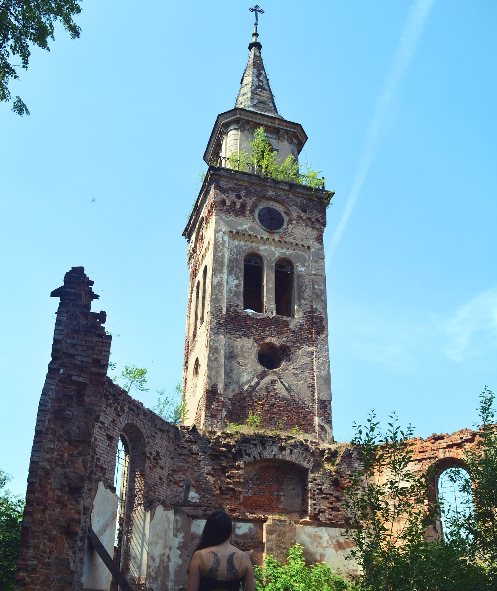
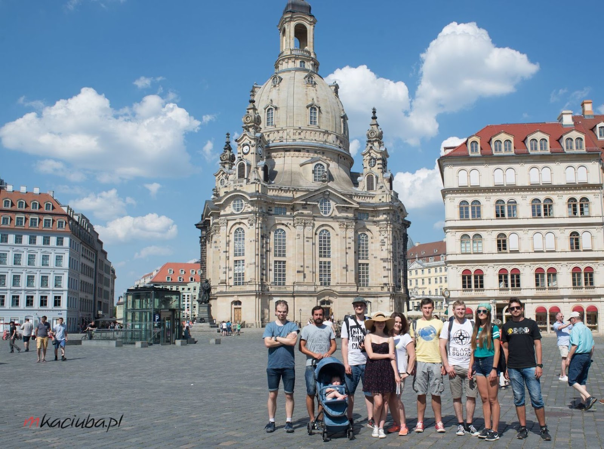
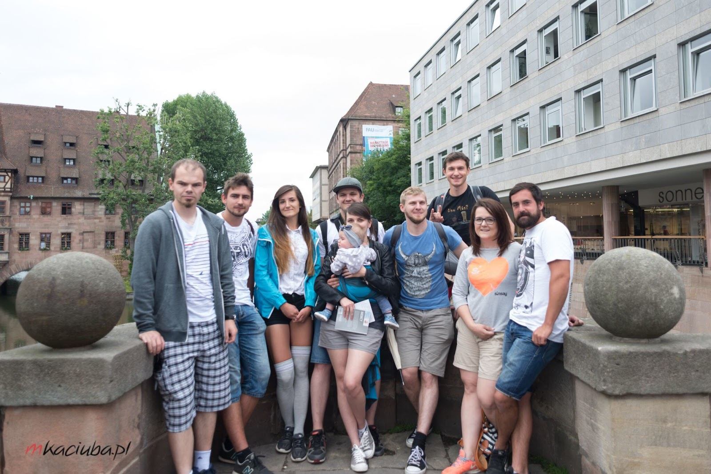
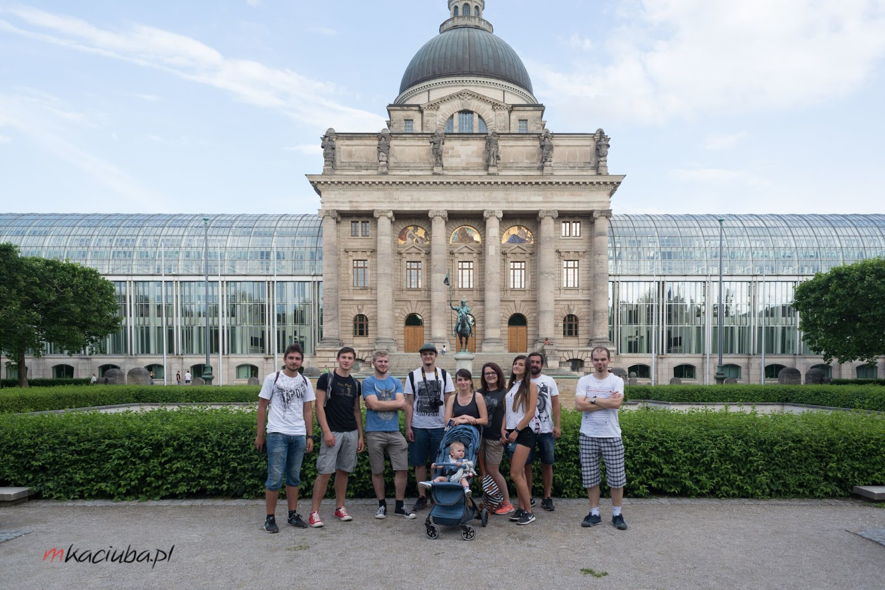

Plan wycieczki
Zwiedzone miejsca
- Skalne Miasto w Adrspach
- Drezno
- Norymberga
- Monachium
- Zamek Neuschwanstein
- Jezioro Chiemsee
- Pałac Hluboka
- Ołomuniec
Czas wycieczki: 5 dni
Skład osobowy: 9 osób i jeden mały, roczny Bąbel
Przejechane kilometry: około 2300
Punkt początkowy i końcowy: Kraków
Noclegi, o ile to możliwe, wyszukiwaliśmy w małych miejscowościach w Czechach zamiast w Niemczech. Dało nam to duże oszczędności i lepszy standard. Naszym ograniczeniem były późne przyjazdy na miejsce oraz konieczność, aby dany obiekt akceptował obecność dzieci. Nie wymagaliśmy za to, aby zapewniono nam łóżeczko - mieliśmy ze sobą swoje, turystyczne. Zaraz przy niemieckiej granicy można też znaleźć sporo tańsze noclegi w Austrii.
Plan wycieczki
Szczegóły planu
Dzień pierwszy
- 16:00 - wyjazd
- 21:00 - przyjazd na nocleg w Adrspach, Czechy
Dzień drugi
- 9:00 - zwiedzanie Skalnego Miasta w Adrspach
- 11:00 - wyjazd w kierunku Drezna
- 15:00 - przyjazd do Drezna, zwiedzanie do około 18:00
- 20:00 - przyjazd na miejsce noclegu Mýtinka, Czechy
Dzień trzeci
- 8:00 - wyjazd
- 10:00 - przyjazd do Norymbergi, wyjazd około 14:00
- 15:40 - przyjazd do Monachium, zwiedzanie do wieczora, wyjazd około 21:00
- 22:00 - nocleg w Kochel, Niemcy
Dzień czwarty
- 8:00 - wyjazd
- 9:00 - przyjazd do zamku Neuschwanstein, odebranie biletów i wyjście na most Marienbrücke
- 11:30 - zwiedzanie zamku Neuschwanstein
- 14:00 - wyjazd
- 16:30 - przyjazd do Herrenchiemsee, Chiemsee, Niemcy, wyjazd 17:30
- 21:00 - przyjazd na miejsce noclegu, Netolice, Czechy
Dzień piąty
- 8:00 - wyjazd
- 8:30 - przyjazd do Pałacu Hluboka, wyjazd około 10:30
- 14:00 - obiad na obrzeżach Ołomuńca, zwiedzanie Ołomuńca, wyjazd około 17:00
- 20:00 - powrót do domu
Piątego dnia, pomiędzy pałacem a Ołomuńcem, mieliśmy w planach Znojmo wraz ze zwiedzaniem podziemi. Okazało się jednak, że w niedzielę otwarte są do godziny 13, więc pojechaliśmy prosto do Ołomuńca.
Plan wycieczki
Trasa
Zwiedzanie
Skalne Miasto
Pierwszym punktem było zwiedzenie Skalnego Miasta w Adrspach. Bąbel został zawinięty w chustę, żeby umożliwić nam przejście całej trasy. Część naszej ekipy zwiedziła miasto nocą - bez żadnych problemów. Samochód zostawiliśmy na parkingu hotelu, w którym nocowaliśmy, 10 minut od wejścia do skał. Informacje dotyczące miasta skalnego można znaleźć tutaj.

Jadąc do Drezna zauważyliśmy w Unisławiu Śląskim opuszczony i zniszczony kościół. Główne wejścia zostały zamurowane, jednak mur był na tyle zniszczony, że bez problemów można było wejść do środka. Cała podłoga zasypana była pozostałościami po zapadniętym dachu i rozbitymi dachówkami.

Zwiedzanie
Drezno
Samochód zostawiliśmy przy Centrum Galerie. Zaczęliśmy od zobaczenia kościoła św. Krzyża, przeszliśmy przez rynek, a następnie Augustusstrasse udaliśmy się do katedry św. Trójcy. Kolejne zwiedzone miejsca to Residenzschloss i Semperoper. Trochę więcej czasu spędziliśmy na zwiedzaniu pałacu Zwinger. Na koniec odwiedziliśmy Złotego Jeźdźca i przez Terrassenufer, obok Sekundogenitur i Albertinum wróciliśmy do samochodu, zahaczając jeszcze o ratusz.

Zwiedzanie
Norymberga
W Norymberdze zaparkowaliśmy na krytym parkingu Nuremberg parking, Bankgasse 9. Zwiedzanie zaczęliśmy od planu i kościoła św. Wawrzyńca, potem idąc Königstrasse minęliśmy szpital św. Ducha i dotarliśmy do rynku - Hauptmarkt. Znajduje się na nim między innymi jaskrawa Piękna Fontanna i kościół NMP. Dalej przeszliśmy obok ratusza do kościoła św. Sebalda. Następnie idąc ulicą Bergstrasse doszliśmy Tiergartenplatz przy murach obronnych i potem prosto na zamek. Można z niego zobaczyć panoramę Norymbergi. Po zwiedzeniu starego miasta zjedliśmy curry wurst w WurstDurst - jedna z obsługujących dziewczyn mówiła po polsku.

Zwiedzanie
Monachium
Do centrum Monachium nie mogliśmy wjechać ze względu na strefy ekologiczne - wybraliśmy parking P+R Olympiazentrum i metrem dojechaliśmy na Marienplatz. Udało nam się zobaczyć zegar na ratuszu o pełnej godzinie, obeszliśmy stare miasto zwiedzając kościoły św. Nepomucena i św. Michała oraz katedrę NMP. Następnie przez Promenadeplatz skierowaliśmy się w kierunku Odeonsplatz. Spędziliśmy dłuższy czas na zwiedzenie placu z przyległymi do niego zabytkami: Feldherrnhalle, kościoła Teatynów i rezydencji wraz z parkiem. Ostatnim etapem zwiedzania było przejście przez plac Maxa Plancka do Maximilianstrasse i dotarcie do Maximilianeum.

Zwiedzanie
Neuschwanstein
Do Neuschwanstein warto zarezerwować bilety wcześniej i przyjechać rano. My byliśmy na miejscu kilka minut po 9, dzięki temu czekaliśmy na odbiór biletów około 10 minut. Można za nie zapłacić kartą. Informacje o biletach i rezerwacji można znaleźć tutaj. Bilety należy odebrać 1,5 godziny przed rozpoczęciem zwiedzania, co pozwala wejść najpierw na most Marienbrücke. Zaparkowaliśmy na parkingu P3 - jeśli pójdziecie w głąb, znajduje się tam spory skrót do zamku. Jest to droga nieutwardzona z dużą ilością schodów.

Zwiedzanie
Prien am Chiemsee
W Herrenchiemsee wybraliśmy parking na ulicy Erlenweg, jednak kilka uliczek dalej można zaparkować za darmo. To dobry wybór, jeśli chcecie zostać tam na dłużej i popłynąć na wyspę, żeby zobaczyć zamek Herrenchiemsee. My zrobiliśmy sobie w tym miejscu tylko krótki przystanek przed dalszą drogą.

Zwiedzanie
Hluboka
Hluboka - tutaj możecie zaparkować niedaleko wjazdu do zamku za 60 CZK za dzień lub, tak jak my, za darmo na pobliskich osiedlach. Pałac ten jest uznawany za jeden z najpiękniejszych w Czechach - naszym zdaniem słusznie. Zwiedziliśmy ogrody i darmową część pałacu dostępną dla turystów. Informacje o zamku można znaleźć tutaj.

Zwiedzanie
Ołomuniec
Do Ołomuńca dotarliśmy w niedzielę i zaparkowaliśmy bez opłat w centrum. Parkingi są tam płatne w dni robocze od 9 do 18, a kwota jest uzależniona od długości postoju. Stare miasto jest drugim co do wielkości w Czechach, jednak my zwiedziliśmy tylko katedrę św. Wacława, Górny i Dolny Rynek oraz kościół św. Maurycego. W tym ostatnim udało nam się wejść na wieżę, która czeka na renowację. Weszliśmy również do kaplicy w kolumnie św. Trójcy na Górnym Rynku - można tam przeczytać po polsku historię tego zabytku.

Zdjęcia robił najlepszy fotograf - Marcin Kaciuba.